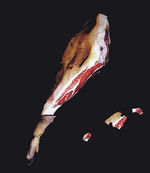

De: La Frikipedia, la enciclopedia extremadamente seria.
De: La Frikipedia, la enciclopedia extremadamente seria. De: La Frikipedia, la enciclopedia extremadamente seria.
| De la serie Países del planeta tierra: | |||||
| Països Catalans | |||||
|---|---|---|---|---|---|
| |||||
| Lema: Aquí y en la China Popular | |||||
| Himno: Botifarra de pagès
| |||||
| 
| |||||
| Capital | Barcelona | ||||
| Mayor ciudad | Fornalutx (Mallorca, Islas Balearicas). | ||||
| Lenguas oficiales | Catalonio, Balero, Valensiá hoygan, Ese Eme Ese, Aspañó | ||||
| Gobierno | Judeocristiana y Chucknorrista | ||||
| Pau casalsista | No hay información | ||||
| Área | Península Ibérica este, Alquer | ||||
| Población | 20 millones (40% sudacas | ||||
| Moneda | doblones de Piratas del Caribe | ||||
| Zona horaria | GTM +1 | ||||
| Dominio Internet | .cat | ||||
| Código telefónico | 9 cifras
| ||||
| Muahaha | |||||
Se llama Paises Catalanes (Catalan Countries en inglés, PPCC en árabe/budista/namekiano, Països Catalans en catalonio o Parifeulis Catalufus en latín) al territorio formado por Cata la uña, Pais Valenci-ano, Islas Balearicas, Pândörra, Francha de ponen, parte de Italy, parte de Le France, parte de tu casa, parte de la parte y si sobra también.
Bañado por las orillas del Mediterráneo, este territorio actualmente español es conocido por sus gentes autóctonas (independentistas potenciales), españoles convertidos al chucknorrismo, namekianos, hijos de puta, moros partidarios de volver a formar Al-Andalus y sudamericopanchitos. ´ Esta formado por: Alacante (Francoland), Violència(Blavencia), Castelló, Toda Catalunya (y más), Baleares, parte de Aragorn , parte de Francia y parte de Italia, también de Namek... ah, y la estrella de la Muerte.
Todo surge cuando los romanos llegan a la península y a las islas. Una parte de ellos, dedicados al comercio y a las ventas se pelearon con los romanos "del interior", dedicados a la exportación de lana y a la agricultura. Un profundo odio surgió entre ambos bandos y para acabar con todo tipo de problemas llamaron a Vin Diesel para que construyera una muralla entre ambos territorios y la custodiara, propinándole un tremendo porrazo a quien se atreviera a cruzarla. (Vease ikea)
Con el tiempo las ciudades fueron progresando y aceptando a población judía y a musulmanes conversos, lo que desencadenó manifestaciones obreras, la aparición del proletariado y las largas jornadas de explotación anal.
En un primer intento por juntar ambos territorios, Felipe V, mas conocido como "El borbón tortuga ninja", intentó mediante el famoso truco de la "patata mariana" (?) incorporar el territorio Oeste con los Países Catalanes (o Corona de Aragorn), pero sus intentos se vieron frustrados por Chuck Norris, que degolló al monarca y se marcho en un caballo que emitía un intenso resplandor dorado surcando los cielos y dejando tras de sí un rastro de sangre que formó 4 líneas paralelas.
Pero el hijo homosexual, republicano y nazareno del fallecido rey, después de comprobar que Chuck volvía a su 4ª dimensión junto a Dios consiguió juntar ambos territorios matando con una bomba de Coca Cola y mentos a Vin Diesel y formar ESPAÑA.
Poco después con el gobierno liberal-socialista de Guerra Viril numerosas gentes de un lado de la muralla, sobretodo andaluces y marroquíes padecedores de alopecia crónica en el ano, cruzaron las ruinas del antiguo muro con cuidado de no pisar el cadáver de Vin Diesel (muerto por la bomba de mentos y coca cola anteriormente citada) y se instalaron por la fuerza en diversas zonas de los Países Catalanes.
Con eso Paquito Franco consiguió introducir a los descendientes de los romanos agricultores al otro lado del muro -lado que nunca antes había sido español- y, como consecuencia, hubo una decadencia en cuanto a tradiciones, costumbres y lengua de los PPCC.
A raíz de esta introducción de los rivales en el país, los habitantes de los países catalanes, con la ayuda de Yasser Arafat y Terra Lliure o El Corte Inglés.
Esta época es conocida como la "Época de Conflicto".
Después de la Guerra Civil, del hundimiento del Lusitania, de la fundación del McDonalds los Paises Catalanes se encontraban en unos momentos caóticos.
-Bailar Sardanas
-Comer Crema Catalana
-Hacer la siesta una hora después que los vascos
-Comprar mucho gastando poco.
-Hablar catalán.
-Gastar lo menos posible
-Hacer Castells
Listado de pueblos, ciudades etc... interesantes. (HOYGAN, C HASEPTAN KONTRIVUSIONES)
Autor(es):